Klimaforandringer
Du har sikkert hørt ordet før, og sandsynligvis i negative sammenhænge
Klimaforandringerne bliver omtalt verden rundt, og der diskuteres, hvordan vi kan standse det
Men hvordan påvirker klimaforandringerne os reelt?
Alt vil ændre sig - skovene, havet, vejret, temperaturen, dyrelivet…
Isen på polerne smelter lige så stille i takt med, at den generelle temperatur stiger, og vandstanden i havene vil stige som konsekvens heraf
Den stigende temperatur vil også have konsekvenser for dyrelivet og afgrøder
Nogle planter, frugter og grøntsager kan ikke dyrkes, hvis temperaturen bliver ved med at stige

På samme måde vil nogle dyrearter ikke kunne tilpasse sig de høje temperaturer, og vi vil derfor se et fald i mængden af dyrearter
Klimaforandringerne påvirker altså hele økosystemet som vi kender det
Og det er ikke til at forudsige, hvilke andre konsekvenser, som klimaforandringerne kommer til at have for kloden
Naturkatastrofer
Vi oplever naturkatastrofer hyppigere end nogensinde, som årsag af klimaforandringerne
I årstallet 1960 oplevede vi i alt 39 naturkatastrofer
Dette tal er over tidoblet siden, og vi oplevede i 2019 et skræmmende antal på 396 naturkatastrofer
Så hvad forårsager klimaforandringer?
Den primære årsag til klimaforandringerne er vores forbrug af fossile brændstoffer
Fossile brændstoffer er kul, olie og naturgas, og ved afbrænding af disse dannes drivhusgasser som blandt andet kuldioxid, bedre kendt som CO2
Ved udledning af drivhusgasser stiger røgen i vejret og ender i jordklodens atmosfære
Når solens stråler rammer Jordens overflade, udsendes der infrarøde stråler, som drivhusgasserne i atmosfæren absorberer, hvilket resulterer i, at varmen fra solstrålerne forbliver i atmosfæren
Dette kaldes drivhuseffekten
Jo større koncentrationen af drivhusgasser i atmosfæren er, jo mere stråling absorberes der, hvilket får temperaturen til at stige